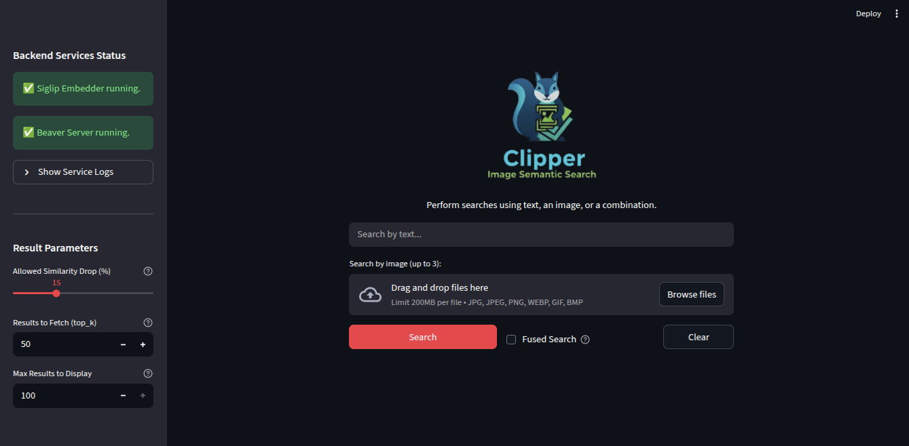

Intelligent, Multimodal Image Search for Your Visual Datasets.

Find the images you need, faster.
Search using text, images, or both. Clipper intelligently combines your queries to find the most relevant results.
Powered by the SigLIP-2 model, Clipper understands the *meaning* and *context* of your search, not just keywords.
Built on BeaverDB, Clipper delivers search results from millions of images in milliseconds, enabling real-time visual search.
Optionally fuse text and image queries into a single, averaged vector for a new class of powerful semantic search.
When searching by multiple inputs, Clipper uses Reciprocal Rank Fusion (RRF) to intelligently merge and rank all result lists.
The Streamlit app automatically manages its own backend services (SigLIP & Beaver), simplifying setup and deployment.
From stock photos to technical diagrams, Clipper finds what you're looking for.
Best-in-class open-source components.
We use Google's state-of-the-art SigLIP-2 model to convert all images and text queries into rich vector embeddings.
BeaverDB is a high-performance, disk-based vector database that stores and searches millions of embeddings with incredible speed.
The entire experience is wrapped in a simple, interactive Streamlit app. It even manages starting and stopping the backend embedding and database servers for you.
Run Clipper where you need it most.
Perfect for individual use and maximum privacy. Your data and models never leave your machine.
Deploy on-premise within your organization's firewall for secure team collaboration.
Host on your own cloud infrastructure (AWS, GCP, Azure) for scalable, secure, and fully-controlled access.
Get in touch to see how Clipper can transform your visual datasets.
Have questions? We have answers.
Security is our top priority. Clipper is designed to run on your local computer or within your enterprise network (on-premise). In these scenarios, your data never leaves your firewall.
This version of Clipper is optimized for SigLIP-2 for embeddings and BeaverDB for search. These were chosen for their top-tier performance and efficiency. Future versions may support other models.
Clipper works with all standard image formats, including, but not limited to, JPG, PNG, WebP, GIF, and BMP. It indexes the *visual content* of the images, allowing you to search by concepts, objects, and style.